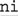
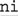
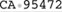

4.4. Backtracking
The essence of an NFA engine is this: it considers each subexpression or component in turn, and whenever it needs to decide between two equally viable options, it selects one and remembers the other to return to later if need be.
Situations where it has to decide among courses of action include anything with a quantifier (decide whether to try another match), and alternation (decide which alternative to try, and which to leave for later).
Whichever course of action is attempted, if it's successful and the rest of the regex is also successful, the match is finished. If anything in the rest of the regex eventually causes failure, the regex engine knows it can backtrack to where it chose the first option, and can continue with the match by trying the other option. This way, it eventually tries all possible permutations of the regex (or at least as many as needed until a match is found).
4.4.1. A Really Crummy Analogy
Backtracking is like leaving a pile of bread crumbs
at every fork in the road. If the path you choose turns out to be a dead end, you can retrace your steps, giving up ground until you come across a pile of crumbs that indicates an untried path. Should that path, too, turn out to be a dead end, you can backtrack further, retracing your steps to the next pile of crumbs, and so on, until you eventually find a path that leads to your goal, or until you run out of untried paths.
There are various situations when the regex engine needs to choose between two (or more) optionsthe alternation we saw earlier is only one example. Another example is that upon reaching  ⋯x?⋯ ⋯x?⋯ , the engine must decide whether it should attempt x. Upon reaching ⋯x+⋯, however, there is no question about trying to match x at least oncethe plus requires at least one match, and that's non-negotiable. Once the first x has been matched, though, the requirement is lifted and it then must decide to match another x. If it decides to match, it must decide if it will then attempt to match yet another... and another... and so on. At each of these many decision points, a virtual "pile of crumbs" is left behind as a reminder that another option (to match or not to match, whichever wasn't chosen at each point) remains viable at that point. , the engine must decide whether it should attempt x. Upon reaching ⋯x+⋯, however, there is no question about trying to match x at least oncethe plus requires at least one match, and that's non-negotiable. Once the first x has been matched, though, the requirement is lifted and it then must decide to match another x. If it decides to match, it must decide if it will then attempt to match yet another... and another... and so on. At each of these many decision points, a virtual "pile of crumbs" is left behind as a reminder that another option (to match or not to match, whichever wasn't chosen at each point) remains viable at that point.
4.4.1.1. A crummy little example
Let's look at a full example using our earlier to(nite|knight|night) regex on the string 'hot•tonic•tonight!' (silly, yes, but a good example). The first component, t, is attempted at the start of the string. It fails to match h, so the entire regex fails at that point. The engine's transmission then bumps along to retry the regex from the second position (which also fails), and again at the third. This time the t matches, but the subsequent o fails to match because the text we're at is now a space. So, again, the whole attempt fails.
The attempt that eventually starts at ⋯ tonic⋯ is more interesting. Once the to has been matched, the three alternatives become three available options. The regex engine picks one to try, remembering the others ("leaving some bread crumbs") in case the first fails. For the purposes of discussion, let's say that the engine first chooses nite. That expression breaks down to "n + i + t...," which gets to ⋯toc⋯ before failing. Unlike the earlier failures, this failure doesn't mean the end of the overall attempt because other optionsthe as-of-yet untried alternativesstill remain. (In our analogy, we still have piles of breadcrumbs we can return to.) The engine chooses one, we'll say knight, but it fails right away because k doesn't match 'n'. That leaves one final option, night, but it too eventually fails. Since that was the final untried option, its failure means the failure of the entire attempt starting at ⋯tonic⋯, so the transmission kicks in again. tonic⋯ is more interesting. Once the to has been matched, the three alternatives become three available options. The regex engine picks one to try, remembering the others ("leaving some bread crumbs") in case the first fails. For the purposes of discussion, let's say that the engine first chooses nite. That expression breaks down to "n + i + t...," which gets to ⋯toc⋯ before failing. Unlike the earlier failures, this failure doesn't mean the end of the overall attempt because other optionsthe as-of-yet untried alternativesstill remain. (In our analogy, we still have piles of breadcrumbs we can return to.) The engine chooses one, we'll say knight, but it fails right away because k doesn't match 'n'. That leaves one final option, night, but it too eventually fails. Since that was the final untried option, its failure means the failure of the entire attempt starting at ⋯tonic⋯, so the transmission kicks in again.
Once the engine works its way to attempt the match starting at ⋯tonight!, it gets interesting again. This time, the night alternative successfully matches to the end (which means an overall match, so the engine can report success at that point).
4.4.2. Two Important Points on Backtracking
The general idea of how backtracking works is fairly simple, but some of the details are quite important for real-world use. Specifically, when faced with multiple choices, which choice should be tried first? Secondly, when forced to backtrack, which saved choice should the engine use? The answer to that first question is this important principle:
In situations where the decision is between "make an attempt" and "skip an attempt," as with items governed by quantifiers, the engine always chooses to first make the attempt for greedyquantifiers, and to first skip the attempt for lazy (non-greedy) ones.
This has far-reaching repercussions. For starters, it helps explain why the greedy quantifiers are greedy, but it doesn't explain it completely. To complete the picture, we need to know which (among possibly many) saved options to use when we backtrack. Simply put:
The most recently saved option is the one returned to when a local failure forces backtracking. They're used LIFO
(last in first out).
This is easily understood in the crummy analogyif your path becomes blocked, you simply retrace your steps until you come back across a pile of bread crumbs. The first you'll return to is the one most recently laid. The traditional analogy for describing LIFO also holds: like stacking and unstacking dishes, the most-recently stacked will be the first unstacked.
4.4.3. Saved States
In NFA regular expression nomenclature, the piles of bread crumbs are known as saved states. A state indicates where matching can restart from, if need be. It reflects both the position in the regex and the point in the string where an untried option begins. Because this is the basis for NFA matching, let me show the implications of what I've already said with some simple but verbose examples. If you're comfortable with the discussion so far, feel free to skip ahead.
4.4.3.1. A match without backtracking
Let's look at a simple example,
matching ab?c against abc. Once the a has matched, the current state of the match is reflected by:
However, now that b? is up to match, the regex engine has a decision to make: should it attempt the b, or skip it?. Well, since ? is greedy, it attempts the match. But, so that it can recover if that attempt fails or eventually leads to failure, it adds
to its otherwise empty list of saved states. This indicates that the engine can later pick up the match in the regex just after the b?, picking up in the text from just before the b (that is, where it is now). Thus, in effect, skipping the b as the question mark allows.
Once the engine carefully places that pile of crumbs, it goes ahead and checks the b. With the example text, it matches, so the new current state becomes:
The final c matches as well, so we have an overall match. The one saved state is no longer needed, so it is simply forgotten.
4.4.3.2. A match after backtracking
Now, if 'ac' had been the text to match, everything would have been the same until the b attempt was made. Of course, this time it wouldn't match. This means that the path that resulted from actually attempting the ⋯? failed. Since there is a saved state available to return to, this "local failure" does not mean overall failure. The engine backtracks, meaning that it takes the most recently saved state as its new current state. In this case, that would be the
state that had been saved as the untried option before the b had been attempted. This time, the c and c match up, so the overall match is achieved.
4.4.3.3. A non-match
Now let's look at the same expression, but against 'abX'. Before the b is attempted, the question mark causes this state to be saved:
The b matches, but that avenue later turns out to be a dead end because the c fails to match X. The failure results in a backtrack to the saved state. The engine next tests c against the b that the backtrack effectively "unmatched." Obviously, this test fails, too. If there were other saved states, another backtrack would occur, but since there aren't any, the overall match at the current starting position is deemed a failure.
Are we done? Nope. The engine's transmission still does its "bump along the string and retry the regex," which might be thought of as a pseudo-backtrack. The match restarts at:
The whole match is attempted again from the new spot, and like before, all paths lead to failure. After the next two attempts (from abX and abX similarly fail, overall failure is finally reported.
4.4.3.4. A lazy match
Let's look at the original example, but with a lazy quantifier, matching ab??c against 'abc'. Once the a has matched, the state of the match is reflected by:
Now that b?? is next to be applied, the regex engine has a decision to make: attempt the b or skip it? Well, since ?? is lazy, it specifically chooses to first skip the attempt, but, so that it can recover if that attempt fails or eventually leads to failure, it adds
to its otherwise empty list of saved states. This indicates that the engine can later pick up the match by making the attempt of b, in the text from just before the b. (We know it will match, but the regex engine doesn't yet know that, or even know if it will ever need to get as far as making the attempt.) Once the state has been saved, it goes ahead and continues from after its skip-the-attempt decision:
The c fails to match 'b', so indeed the engine must backtrack to its one saved state:
Of course, it matches this time, and the subsequent c matches 'c'. The same final match we got with the greedy ab?c is achieved, although via a different path.
4.4.4. Backtracking and Greediness
For tools that use this NFA regex-directed backtracking
engine, understanding how backtracking works with your regular expression is the key to writing expressions that accomplish what you want, and accomplish it quickly. We've seen how ? greediness and ?? laziness works, so now let's look at star and plus.
4.4.4.1. Star, plus, and their backtracking
If you consider x* to be more or less the same as x?x?x?x?x?x?⋯ (or, more appropriately, (x(x(x(x⋯?)?)?)?)?), it's not too different from what we have already seen. Before checking the item quantified by the star, the engine saves a state indicating that if the check fails (or leads to failure), the match can pick up after the star. This is done repeatedly, until an attempt via the star actually does fail.
Thus, when matching [0-9]+ against 'a•1234•num', once [0-9] fails to match the space after the 4, there are four saved states corresponding to locations to which the plus can backtrack:
a 1234 num
a 1234 num
a 1234 num
a 1234 num
These represent the fact that the attempt of [0-9] had been optional at each of these positions. When [0-9] fails to match the space, the engine backtracks to the most recently saved state (the last one listed), picking up at 'a•1234•num' in the text and at [0-9]+ in the regex. Well, that's at the end of the regex. Now that we're actually there and notice it, we realize that we have an overall match.
Note that 'a•1234•num' is not in the list of positions, because the first match using the plus quantifier is required, not optional. Would it have been in the list had the regex been [0-9]? (hint: it's a trick question) ❖ Turn the page to check your answer.
4.4.4.2. Revisiting a fuller example
With our more detailed understanding, let's revisit the ^.*([0-9][0-9]) example from page 152. This time, instead of just pointing to "greediness" to explain why the match turns out as it does, we can use our knowledge of NFA mechanics to explain why in precise terms.
I'll use 'CA•95472,•USA' as an example. Once the .* has successfully matched to the end of the string, there are a baker's dozen saved states accumulated from the star-governed dot matching 13 things that are (if need be) optional. These states note that the match can pick up in the regex at ^.*([0-9][0-9]), and in the string at each point where a state was created.
Now that we've reached the end of the string and pass control to the first [0-9], the match obviously fails. No problem: we have a saved state to try (a baker's dozen of them, actually). We backtrack, resetting the current state to the one most recently saved, to just before where .* matched the final A. Skipping that match (or "unmatching" it, if you like) gives us the opportunity to try that A against the first [0-9]. But, it fails.
This backtrack-and-test cycle continues until the engine effectively unmatches the 2, at which point the first [0-9] can match. The second can't, however, so we must continue to backtrack. It's now irrelevant that the first [0-9] matched during the previous attempt; the backtrack resets the current state to before the first [0-9]. As it turns out, the same backtrack resets the string position to just before the 7, so the first [0-9] can match again. This time, so can the second (matching the 2). Thus, we have a match: ', •USA', with $1 getting '72'.
A few observations: first, backtracking
entails not only recalculating our position within the regex and the text, but also maintaining the status of the text being matched by the subexpression within parentheses. Each backtrack caused the match to be picked up before the parentheses, at ^.*([0-9][0-9]). As far as the simple match attempt is concerned, this is the same as ^.*[0-9][0-9], so I used phrases such as "picks up before the first [0-9]." However, moving in and out of the parentheses involves updating the status of what $1 should be, which also has an impact on efficiency.
One final observation that may already be clear to you: something governed by star (or any of the greedy quantifiers) first matches as much as it can without regard to what might follow in the regex. In our example, the .* does not magically know to stop at the first digit, or the second to the last digit, or any other place until what's governed by the greedy quantifierthe dotfinally fails. We saw this earlier when looking at how ^.*([0-9]+) would never have more than a single digit matched by the [0-9]+ part (☞ 153).
 |  ]
]